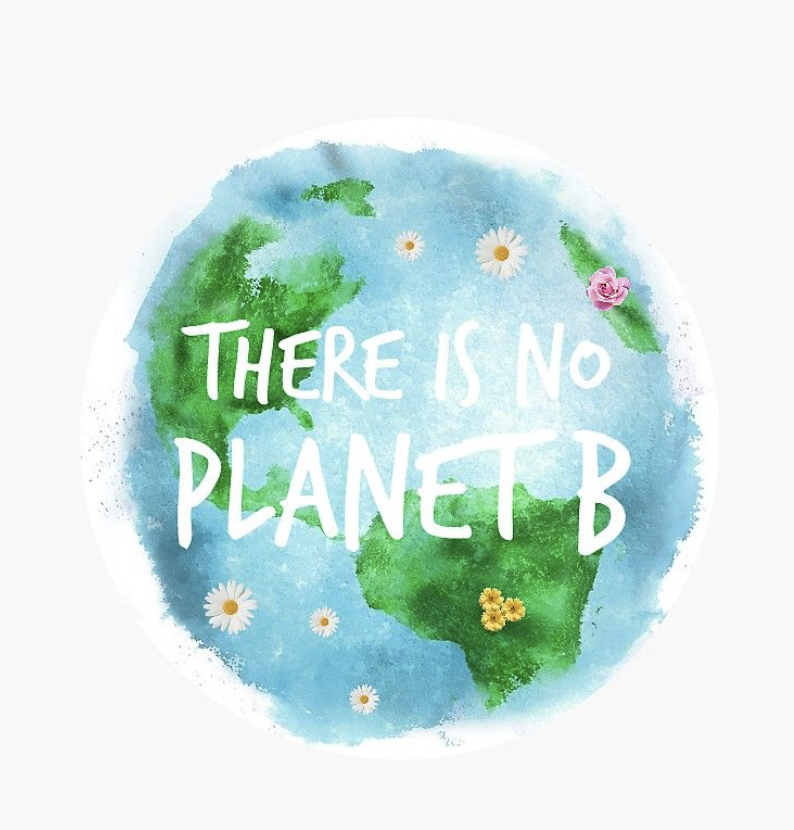

The scale of the challenges facing our planet can seem daunting,
but we can all do something.
Here are 10 simple ways you can help reduce your impact,
and help in the fight against climate change.

REDUCE YOUR WASTE
1. We need to make wasting our resources unacceptable in all aspects of our life.
Every product we buy has an environmental footprint and could end up in landfill.
The impact of plastic pollution on our oceans is becoming increasingly clear, having drastic impacts on marine life.
2. Recycling what we can reduces the amount of new materials we are making, and upcycling is a creative way to make old items into something more valuable.
This could be reusing a jam jar as a candle holder, or using old tins as plant pots – the possibilities are endless!
3. It’s not just the products we buy.
It’s estimated that a third of all food produced in the world is lost or wasted.
Do your bit by eating up leftovers and use any ingredients you have spare to make interesting meals.
Try to waste as little food as possible, and compost the organic waste you can’t eat.
Food production is a major driver of wildlife extinction. What we eat contributes around a quarter of global greenhouse gas emissions and is responsible for almost 60% of global biodiversity loss.
Another thing
Farming animals for meat and dairy requires space and huge inputs of water and feed. Today, one of the biggest causes of forest loss is the expansion of agricultural land for animal feed production, such as soy. And producing meat creates vastly more carbon dioxide than plants such as vegetables, grains and legumes. Moving away from a meat-dominated diet towards a more plant-based diet can lower your impact on the environment. Vegetarian and vegan foods are massively on the rise and becoming far more common in restaurants, cafes and supermarkets, so you’ll rarely struggle. Not only that, but cutting down on meat and dairy products can reduce your weekly food bills.
• vegetables
• fruits
• seafood
Farming animals for meat and dairy requires space and huge inputs of water and feed. Today, one of the biggest causes of forest loss is the expansion of agricultural land for animal feed production, such as soy. And producing meat creates vastly more carbon dioxide than plants such as vegetables, grains and legumes. Moving away from a meat-dominated diet towards a more plant-based diet can lower your impact on the environment. Vegetarian and vegan foods are massively on the rise and becoming far more common in restaurants, cafes and supermarkets, so you’ll rarely struggle. Not only that, but cutting down on meat and dairy products can reduce your weekly food bills.
• vegetables
• fruits
• seafood